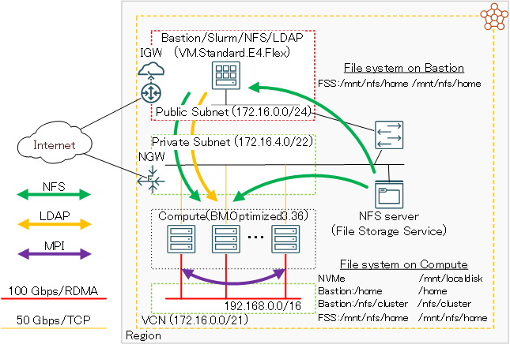
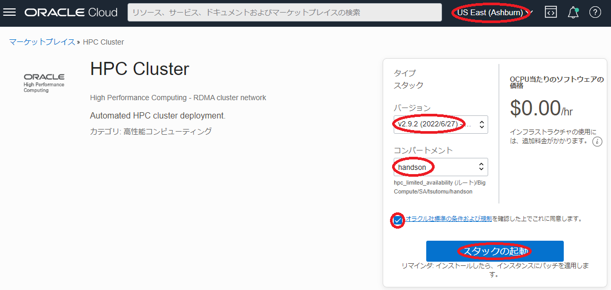
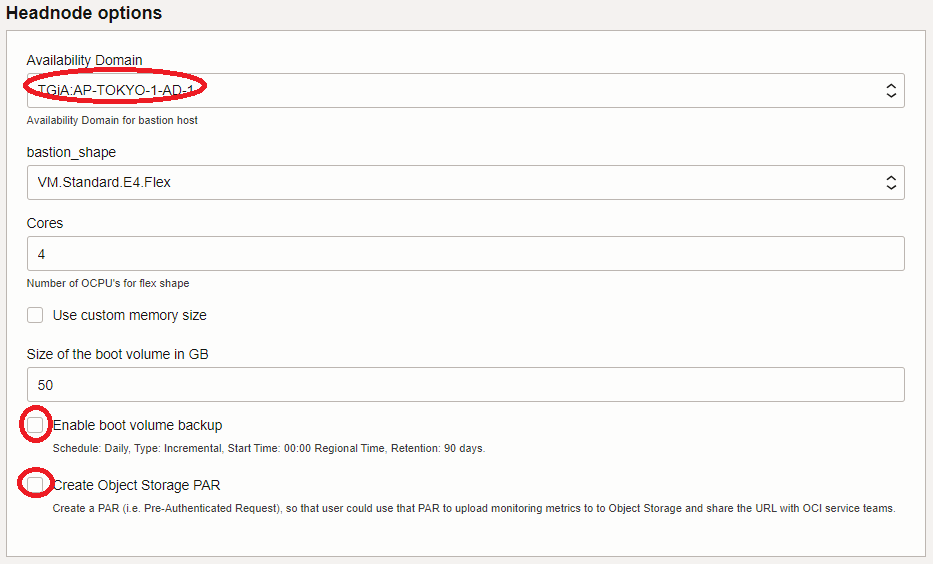
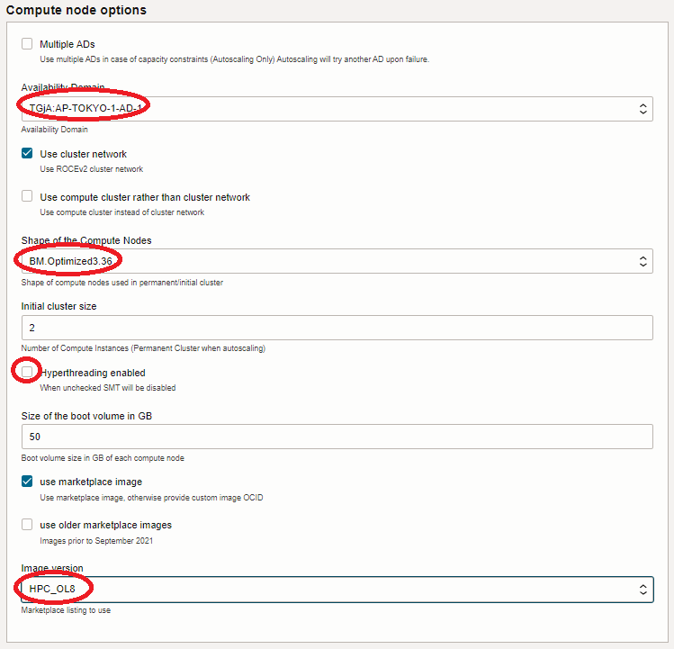
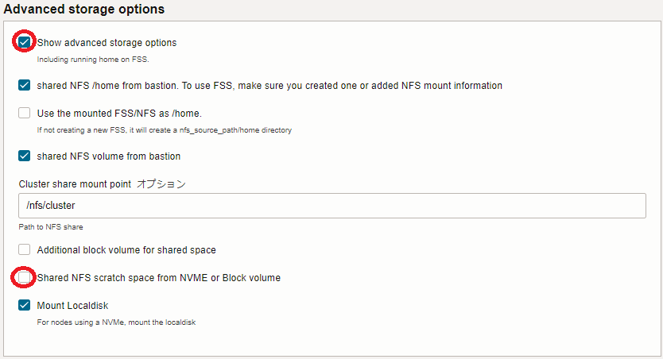
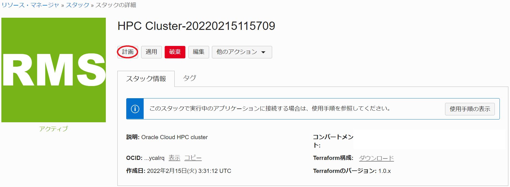
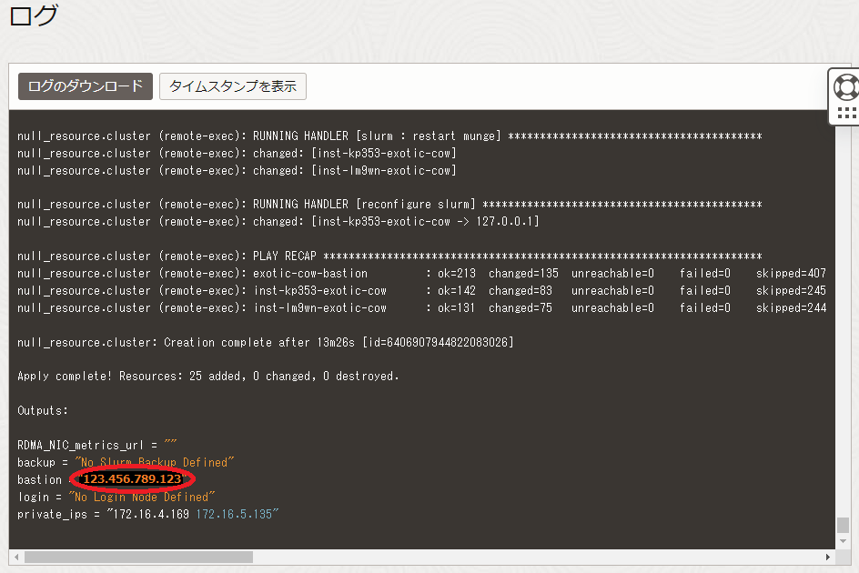
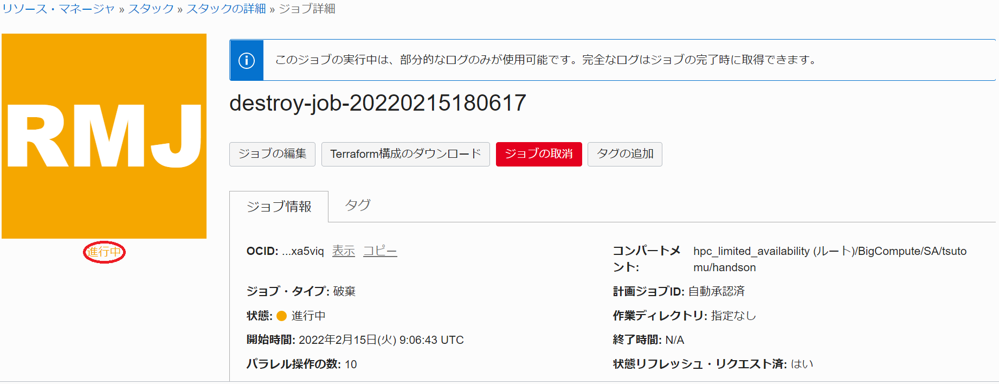

Oracle Cloud Infrastructure（以降OCIと記載）は、以下の特徴からHPCワークロードを実行するHPCクラスタを構築するには最適なクラウトサービスです。
- 仮想化オーバーヘッドの無いHPC用途に特化したベアメタルシェイプ
- RoCEv2 を使用する高帯域・低レイテンシRDMAインターコネクトネットワーク
このチュートリアルは、 マーケットプレイス から無償で利用可能な HPCクラスタスタック を利用し、以下構成の典型的なHPCクラスタを構築、そのインターコネクト性能を検証します。
- HPC向け Intel Ice Lake プロセッサ搭載計算ノード（ BM.Optimized3.36 ）
- 100 Gbps RoCEv2 RDMAインターコネクト（※1）
- インターネットからSSH接続可能なBastionノード
- OS: Oracle Linux 8
- ジョブスケジューラ: Slurm
- OCI ファイルストレージ によるHPCクラスタ内ホームディレクトリ共有
- LDAPによるクラスタ内ユーザ統合管理
※1：OCIでは、このインターコネクトネットワークを クラスタ・ネットワーク と呼称します。

HPCクラスタスタック を利用すると、通常であれば数日かかるようなHPCクラスタ構築作業を、OCIコンソールのGUIから10項目程度のメニューを選択するだけで実施することが可能になります。
またこのチュートリアルでは、クラスタ構築後により大規模な計算を実施する必要が生じたり、メンテナンスによりノードを入れ替える必要が生じることを想定し、既存のクラスタに計算ノードを追加する方法と、特定の計算ノードを入れ替える方法も学習します。
所要時間 : 約1時間
前提条件 : HPCクラスタを収容するコンパートメント(ルート・コンパートメントでもOKです)の作成と、このコンパートメントに対する必要なリソース管理権限がユーザーに付与されていること。具体的には、以下ページの Policies to deploy the stack: に記載のポリシーが付与されていること。
https://cloud.oracle.com/marketplace/application/67628143/usageInformation
注意 : チュートリアル内の画面ショットについては、OCIの現在のコンソール画面と異なっている場合があります。また使用する HPCクラスタスタック のバージョンが異なる場合も、チュートリアル内の画面ショットが異なる場合があります。
0. HPCクラスタスタックの概要
本チュートリアルで使用する HPCクラスタスタック は、クラスタ構築を大きく2つのステップに分けて実行しており、前半は Terraform を使用したOCIレベルのリソース構築フェーズで、後半は Terraform から起動される Ansible によるOSレベルのカスタマイズフェーズです。
具体的には、以下のような処理が行われます。
［ Terraform によるOCIリソース構築フェーズ］
- VCNと関連するネットワークリソース構築
- クラスタ・ネットワーク と関連リソース構築
- Bastionノードインスタンス構築
- 計算ノードインスタンス構築
- ファイルストレージ 構築
- Ansible 関連ソフトウェアインストール
[ Ansible によるOSレベルカスタマイズフェーズ]
- firewalld停止
- NVMe SSDローカルディスクファイルシステム構築
- /etc/hostsファイル生成
- NFSファイル共有環境構築
- LDAPユーザ統合環境構築
- RDMAインタフェース構築
- Slurm 環境構築
1. スタックの作成
本章は、 マーケットプレイス から提供される HPCクラスタスタック を元に、前述のHPCクラスタ環境を構築するための スタック を作成します。このチュートリアルで使用する HPCクラスタスタック は、バージョン2.10.1.1です。
-
以下 マーケット・プレース の HPCクラスタスタック ページにアクセスします。
-
OCIコンソールへのログイン画面が表示された場合（まだログインしていない場合）、ログインを完了します。
-
表示される以下画面の右上で、 スタック をデプロイするリージョンを選択し、 HPCクラスタスタック の バージョン を確認後、 コンパートメント を HPCクラスタスタック をデプロイするコンパートメントに指定、使用許諾 チェックボックスをチェックし、 スタックの起動 ボタンをクリックします。

- 表示される以下 スタック情報 画面で、以下の情報を入力し、下部の 次 ボタンをクリックします。
- 名前 : スタック に付与する名前（任意）
- 説明 : スタック に付与する説明（任意）

-
表示される 変数の構成 画面で、各画面フィールドに以下の情報を入力し、下部の 次 ボタンをクリックします。なお、ここに記載のないフィールドは、デフォルトのままとします。
5.1 Cluster configuration フィールド
- Public SSH key : Bastionにログインする際使用するSSH秘密鍵に対応する公開鍵
- 公開鍵ファイルのアップロード（ SSHキー・ファイルの選択 ）と公開鍵のフィールドへの貼り付け（ SSHキーの貼付け ）が選択可能

5.2 Headnode options フィールド
- Availability Domain : BastionノードをデプロイするAD

5.3 Compute node options フィールド
- Availability Domain : 計算ノードをデプロイするAD
- Shape of the Compute Nodes : BM.Optimized3.36
- Initial cluster size : 計算ノードのノード数（デフォルト：2）
- Image version : HPC_OL8

5.4 Additional file system フィールド
- Add another NFS filesystem : チェック
- Create FSS : チェック
- NFS Path : /mnt/home（※2）
- NFS server Path : /mnt/home（※2）
※2：ここで指定するパスは、 ファイルストレージ 領域に作成するLDAPユーザのホームディレクトリを格納するディレクトリを指定しています。よって、ユーザ名user1のLDAPユーザのホームディレクトリは、/mnt/home/user1となります。

5.5 Advanced storage options フィールド
- Show advanced storage options : チェック
-
Shared NFS scratch space from NVME or Block volume : チェックオフ
- 計算ノードのNVMe SSDローカルディスク領域をNFS共有するかの指定（本チュートリアルでは共有しない）

- Public SSH key : Bastionにログインする際使用するSSH秘密鍵に対応する公開鍵
-
表示される 確認 画面で、これまでの設定項目が意図したものになっているかを確認し、以下 作成されたスタックで適用を実行しますか。 フィールドの 適用の実行 をチェックオフし、下部の 作成 ボタンをクリックします。

ここで 適用の実行 をチェックした場合、 作成 ボタンのクリックと同時に スタック の適用が開始され、HPCクラスタのデプロイが始まりますが、このチュートリアルでは スタック の計画を実行してから適用を行います。
これで、以下画面のとおり スタック が作成されました。

2. スタックの計画
本章は、完成した スタック を計画し、どのようなリソースがデプロイされるか確認します。
-
作成した スタック の以下 スタックの詳細 画面で、 計画 ボタンをクリックします。

-
表示される以下 計画 サイドバーで、 計画 ボタンをクリックします。

-
表示される以下 ジョブ詳細 ウィンドウで、左上のステータスが 受入れ済 → 進行中 → 成功 と遷移すれば、 スタック の計画が終了しています。
表示される以下 ログ フィールドで、適用時にデプロイされるリソースを確認します。

3. スタックの適用
本章は、計画で作成されるリソースに問題が無いことを確認した スタック に対し、適用を行いHPCクラスタをデプロイします。
-
以下 スタックの詳細 画面で、 適用 ボタンをクリックします。

-
表示される以下 適用 サイドバーで、 適用 ボタンをクリックします。
-
表示される以下 ジョブ詳細 ウィンドウで、左上のステータスが 受入れ済 → 進行中 と遷移すれば、 スタック の適用が実施されています。

表示される以下 ログ フィールドで、リソースのデプロイ状況を確認します。
この適用が完了するまでの所要時間は、計算ノードのノード数が2ノードの場合で15分程度です。
ステータスが 成功 となれば、HPCクラスタのデプロイが完了しています。
4. HPCクラスタの確認
本章は、デプロイされたHPCクラスタにログインし、環境を確認します。
-
Bastionノードログイン
Bastionへのログインは、 スタック 適用時の以下 ログ フィールドの最後に表示されているBastionのIPアドレスを使用し、インターネットを介してopcユーザでSSHログインします。

このSSH接続では、スタックに指定したSSH公開鍵に対応する秘密鍵を使用します。
> ssh -i path_to_ssh_secret_key opc@123.456.789.123 -
Bastionノードファイルシステム確認
Bastionノードは、以下のようにファイルストレージの/mnt/homeがマウントされています。この/mnt/homeは、HPCクラスタ内で共有するLDAPユーザのホームディレクトリに使用します。
> df -h /mnt/home Filesystem Size Used Avail Use% Mounted on FSS_ip:/mnt/home 8.0E 0 8.0E 0% /mnt/home -
計算ノードログイン
計算ノードは、プライベートサブネットに接続されており、インターネット経由ログインすることが出来ないため、Bastionノードを経由してログインします。
計算ノードのホスト名は、Bastionノードの/etc/opt/oci-hpcディレクトリ以下のファイルに格納されており、hostfile.tcpとhostfile.rdmaがそれぞれプライベートサブネット接続と クラスタ・ネットワーク サブネット接続に使用するIPアドレスに対応するホスト名です。このため、Bastionノードから計算ノードへのログインは、hostfile.tcpファイルに格納されているホスト名を使用し、opcユーザでSSHログインします。
> cat /etc/opt/oci-hpc/hostfile.tcp inst-ecrs7-massive-coyote inst-mnykj-massive-coyote > ssh inst-ecrs7-massive-coyote -
計算ノードファイルシステム確認
計算ノードは、以下のようにNVMe領域が/mnt/localdiskにマウントされています。
> df -h /mnt/localdisk Filesystem Size Used Avail Use% Mounted on /dev/nvme0n1p1 3.5T 33M 3.5T 1% /mnt/localdiskまた、以下のようにBasionノードの/homeと/export/clusterが全ての計算ノードでマウントされています。これらの領域は、Bastionノードの/homeをopcユーザのホームディレクトリ領域に、/export/clusterをHPCクラスタ内で共有する任意のデータを格納する領域に、それぞれ使用します。
> df -h /home /nfs/cluster Filesystem Size Used Avail Use% Mounted on Bastion_ip:/home 42G 13G 29G 32% /home Bastion_ip:/export/cluster 42G 13G 29G 32% /nfs/clusterまた、以下のようにファイルストレージの/mnt/homeが全ての計算ノードでマウントされています。
> df -h /mnt/home Filesystem Size Used Avail Use% Mounted on FSS_ip:/mnt/home 8.0E 0 8.0E 0% /mnt/home
5. LDAPユーザ作成
本章は、 HPCクラスタスタック が作成したHPCクラスタ内のLDAP統合ユーザ管理環境に於いて、LDAPユーザを作成しこのユーザでHPCクラスタにログイン出来ることを確認します。
このLDAP統合ユーザ管理環境は、BastionノードがLDAPサーバで計算ノードがLDAPクライアントです。
-
LDAPユーザ作成
LDAPサーバであるBastionノードは、ユーザ管理のためのclusterコマンドが用意されています。
このコマンドは、作成するユーザのホームディレクトリを/home以下に作成するため、本環境のLDAPユーザ用ホームディレクトリであるファイルストレージの/mnt/home以下に作成するよう修正する必要があります。このため、以下コマンドをBastionノードのopcユーザで実行します。
> sudo sed -i 's/\/home\//\/mnt\/home\//g' /usr/bin/cluster次に、以下コマンドをBastionノードのopcユーザで実行し、LDAPユーザを作成します。
> cluster user add user_name Password: <- Password for user_name Repeat for confirmation: <- Password for user_name Full Name: full_name <- Full name for user_name Creating groupここで指定するパスワードは、HPCクラスタ内の認証にパスワード認証を使用しないため、任意のパスワードで構いません。
次に、このユーザがインターネットからBastionノードにSSHログインする際に使用するSSH秘密鍵に対応する公開鍵を登録するため、以下コマンドをBastionノードのopcユーザで実行します。
> echo 'public_key_for_user_name' | sudo tee -a ~user_name/.ssh/authorized_keys public_key_for_user_name -
LDAPユーザログイン
先に作成したLDAPユーザを使用したインターネットを介したBastionノードへのログインは、以下コマンドでSSHログインします。
このSSH接続では、先のLDAPユーザ作成で指定したSSH公開鍵に対応する秘密鍵を使用します。> ssh -i path_to_ssh_secret_key_for_user_name user_name@123.456.789.123
6. MPIプログラム実行（2ノード編）
本章は、先に作成したLDAPユーザを使ってMPIプログラムを Slurm を介してバッチジョブとして投入し、構築したHPCクラスタのインターコネクト性能を Intel MPI Benchmark で確認します。
ここでは、2ノードの Ping-Pong 性能を計測しており、以下性能が出ています。
- 帯域：約12 GB/s（インタフェース物理帯域100 Gbpsに対し96 Gbpsを計測）
- レイテンシ：約1.7 μs
以降の手順は、先に作成したLDAPユーザで実施します。
-
バッチジョブスクリプト作成
以下のバッチジョブ投入用スクリプトをBastionノードのホームディレクトリ下に作成します。
> cat submit.sh #!/bin/bash #SBATCH -p compute #SBATCH -n 2 #SBATCH -N 2 #SBATCH -J ping_ping #SBATCH -o stdout.%J #SBATCH -e stderr.%J # Only for BM.Optimized3.36 export UCX_NET_DEVICES=mlx5_2:1 source /usr/mpi/gcc/openmpi-4.1.2a1/bin/mpivars.sh mpirun /usr/mpi/gcc/openmpi-4.1.2a1/tests/imb/IMB-MPI1 -msglog 3:28 PingPong -
バッチジョブ投入
作成したスクリプトをバッチジョブとして投入します。
> sbatch submit.sh Submitted batch job 2 -
バッチジョブ結果確認
投入したバッチジョブの結果を確認します。
> cat stdout.2 #------------------------------------------------------------ # Intel (R) MPI Benchmarks 2018, MPI-1 part #------------------------------------------------------------ # Date : Mon Apr 10 08:08:45 2023 # Machine : x86_64 # System : Linux # Release : 4.18.0-372.26.1.0.1.el8_6.x86_64 # Version : #1 SMP Tue Sep 13 21:44:27 PDT 2022 # MPI Version : 3.1 # MPI Thread Environment: # Calling sequence was: # /usr/mpi/gcc/openmpi-4.1.2a1/tests/imb/IMB-MPI1 -msglog 3:28 PingPong # Minimum message length in bytes: 0 # Maximum message length in bytes: 268435456 # # MPI_Datatype : MPI_BYTE # MPI_Datatype for reductions : MPI_FLOAT # MPI_Op : MPI_SUM # # # List of Benchmarks to run: # PingPong #--------------------------------------------------- # Benchmarking PingPong # #processes = 2 #--------------------------------------------------- #bytes #repetitions t[usec] Mbytes/sec 0 1000 1.67 0.00 8 1000 1.68 4.78 16 1000 1.68 9.55 32 1000 1.72 18.61 64 1000 1.84 34.82 128 1000 1.89 67.72 256 1000 2.14 119.51 512 1000 2.21 231.44 1024 1000 2.33 438.64 2048 1000 3.04 673.29 4096 1000 3.77 1085.28 8192 1000 4.87 1683.00 16384 1000 6.73 2432.75 32768 1000 9.26 3540.00 65536 640 10.87 6029.75 131072 320 16.36 8013.06 262144 160 28.70 9133.90 524288 80 50.18 10448.62 1048576 40 92.93 11283.11 2097152 20 178.58 11743.24 4194304 10 349.85 11988.82 8388608 5 692.99 12104.99 16777216 2 1378.36 12171.85 33554432 1 2750.49 12199.42 67108864 1 5491.94 12219.51 134217728 1 10972.51 12232.18 268435456 1 21945.08 12232.15 # All processes entering MPI_Finalize
7. 計算ノード追加
本章は、構築した2ノードクラスタに計算ノードを2ノード追加して4ノードクラスタに拡張します。
この計算ノード追加は、OCIコンソールから実施する追加2ノード分のOCIリソース構築フェーズと、Bastionノードのコマンドラインから実施する Ansible のOSレベルカスタマイズフェーズを、個別に実行することで行います。
OCIリソース構築フェーズは、 OCI HPCテクニカルTips集 の 計算/GPUノードの追加・削除・入れ替え方法 の 2. ノード数を増やす 手順を実施します。
OCIリソース構築フェーズが終了した段階は、追加した計算ノード用インスタンスのデプロイが完了し既存 クラスタ・ネットワーク に物理的に接続されOSが起動した状態で、未だ クラスタ・ネットワーク を利用可能な状態になっていません。
次に、 Ansible によるOSレベルカスタマイズを行います。
-
Bastionノードにログインし、 Ansible のインベントリファイル/etc/ansible/hostsの compute セクションの最後に、追加された計算ノードのホスト名とIPアドレスの記述を、以下のように追加します。
[compute] inst-gxosv-relevant-owl ansible_host=172.16.6.51 ansible_user=opc role=compute inst-mdu0w-relevant-owl ansible_host=172.16.6.187 ansible_user=opc role=compute # # Two nodes added from here inst-yzgqv-relevant-owl ansible_host=172.16.5.203 ansible_user=opc role=compute inst-jow40-relevant-owl ansible_host=172.16.5.11 ansible_user=opc role=compute # -
本ステップで実行するコマンドは、Bastionから計算ノードへのSSH接続を使用するため、全ての計算ノードがSSH接続可能な状態まで起動されていることを確認します。
以下コマンドを実行し、追加された計算ノードに対する Ansible のOSレベルカスタマイズを起動、最後の PLAY RECAP フィールドの出力で failed や unreachable の項目が無いことで、正常に終了していることを確認します。
> ANSIBLE_HOST_KEY_CHECKING=False ansible-playbook /opt/oci-hpc/playbooks/site.yml : : : PLAY RECAP ********************************************************************************************** inst-gxosv-relevant-owl : ok=86 changed=16 unreachable=0 failed=0 skipped=59 rescued=0 ignored=0 inst-jow40-relevant-owl : ok=85 changed=51 unreachable=0 failed=0 skipped=56 rescued=0 ignored=0 inst-mdu0w-relevant-owl : ok=83 changed=13 unreachable=0 failed=0 skipped=57 rescued=0 ignored=0 inst-yzgqv-relevant-owl : ok=85 changed=51 unreachable=0 failed=0 skipped=56 rescued=0 ignored=0 relevant-owl-bastion : ok=112 changed=21 unreachable=0 failed=0 skipped=115 rescued=0 ignored=0 >
以上で、 Ansible のOSレベルカスタマイズフェーズは完了し、4ノードのHPCクラスタが利用可能になります。
8. MPIプログラム実行（4ノード編）
本章は、先に作成したLDAPユーザを使ってMPIプログラムを Slurm を介してバッチジョブとして投入し、追加後の4ノードHPCクラスタのインターコネクト性能を Intel MPI Benchmark で確認します。
ここでは、4ノードの Alltoall 性能を計測しています。
以降の手順は、先に作成したLDAPユーザで実施します。
-
バッチジョブスクリプト作成
以下のバッチジョブ投入用スクリプトをBastionノードのホームディレクトリ以下に作成します。
> cat submit_4nodes.sh #!/bin/bash #SBATCH -p compute #SBATCH -n 4 #SBATCH -N 4 #SBATCH -J all_to_all #SBATCH -o stdout.%J #SBATCH -e stderr.%J # Only for BM.Optimized3.36 export UCX_NET_DEVICES=mlx5_2:1 source /usr/mpi/gcc/openmpi-4.1.2a1/bin/mpivars.sh mpirun /usr/mpi/gcc/openmpi-4.1.2a1/tests/imb/IMB-MPI1 -mem 4 Alltoall -
バッチジョブ投入
作成したスクリプトをバッチジョブとして投入します。
> sbatch submit_4nodes.sh Submitted batch job 3 -
バッチジョブ結果確認
投入したバッチジョブの結果を確認します。
> cat stderr.3 Loading mpi version 2021.3.0 > cat stdout.3 #---------------------------------------------------------------- # Intel(R) MPI Benchmarks 2021.2, MPI-1 part #---------------------------------------------------------------- # Date : Thu Mar 24 04:29:15 2022 # Machine : x86_64 # System : Linux # Release : 3.10.0-1160.25.1.el7.x86_64 # Version : #1 SMP Tue Apr 27 15:52:10 PDT 2021 # MPI Version : 3.1 # MPI Thread Environment: # Calling sequence was: # IMB-MPI1 -mem 4 Alltoall # Minimum message length in bytes: 0 # Maximum message length in bytes: 4194304 # # MPI_Datatype : MPI_BYTE # MPI_Datatype for reductions : MPI_FLOAT # MPI_Op : MPI_SUM # # # List of Benchmarks to run: # Alltoall #---------------------------------------------------------------- # Benchmarking Alltoall # #processes = 2 # ( 2 additional processes waiting in MPI_Barrier) #---------------------------------------------------------------- #bytes #repetitions t_min[usec] t_max[usec] t_avg[usec] 0 1000 0.07 0.07 0.07 1 1000 0.65 6.07 3.36 2 1000 0.82 6.21 3.51 4 1000 0.63 6.11 3.37 8 1000 0.68 6.05 3.37 16 1000 0.66 6.15 3.41 32 1000 0.67 6.15 3.41 64 1000 0.75 6.29 3.52 128 1000 0.79 6.37 3.58 256 1000 0.97 6.69 3.83 512 1000 1.03 6.79 3.91 1024 1000 1.81 6.31 4.06 2048 1000 7.22 7.25 7.24 4096 1000 7.90 7.92 7.91 8192 1000 8.50 8.55 8.53 16384 1000 9.82 9.87 9.85 32768 1000 13.08 13.09 13.09 65536 640 23.10 23.10 23.10 131072 320 30.03 30.50 30.27 262144 160 43.79 43.85 43.82 524288 80 71.72 71.86 71.79 1048576 40 272.44 277.41 274.93 2097152 20 520.28 526.08 523.18 4194304 10 1002.88 1007.84 1005.36 #---------------------------------------------------------------- # Benchmarking Alltoall # #processes = 4 #---------------------------------------------------------------- #bytes #repetitions t_min[usec] t_max[usec] t_avg[usec] 0 1000 0.08 0.08 0.08 1 1000 3.77 4.16 3.97 2 1000 3.62 4.32 3.97 4 1000 3.54 4.40 3.98 8 1000 3.55 4.40 3.98 16 1000 3.60 4.35 3.98 32 1000 3.35 4.77 4.06 64 1000 3.68 4.61 4.16 128 1000 4.17 4.23 4.20 256 1000 4.66 5.13 4.87 512 1000 4.45 5.63 5.02 1024 1000 4.93 5.58 5.23 2048 1000 7.70 7.76 7.74 4096 1000 8.98 9.09 9.06 8192 1000 11.02 11.40 11.23 16384 1000 12.88 13.61 13.31 32768 1000 20.15 21.55 20.79 65536 640 32.60 34.18 33.04 131072 320 53.61 58.48 55.11 262144 160 99.36 106.92 102.02 524288 80 185.47 206.04 194.67 1048576 40 406.18 445.43 425.45 2097152 20 807.91 919.29 863.22 4194304 10 1588.80 1787.67 1688.05 # All processes entering MPI_Finalize
9. 計算ノード入れ替え
本章は、構築した4ノードクラスタのうち1ノードにハードウェア障害等が発生した場合を想定し、この計算ノードを新たな計算ノードに入れ替えます。
この計算ノード入れ替えは、OCIコンソールから実施するOCIリソースレベルの計算ノード入れ替えフェーズと、Bastionノードのコマンドラインから実施する Ansible によるOSレベルの新計算ノードカスタマイズフェーズを、個別に実行することで行います。
OCIリソースレベルの計算ノード入れ替えフェーズは、 OCI HPCテクニカルTips集 の 計算/GPUノードの追加・削除・入れ替え方法 の 3. ノードを置き換える 手順を実施します。
OCIリソースレベルの計算ノード入れ替えフェーズが終了した段階は、置き換え後の新計算ノード用インスタンスのデプロイが完了し既存 クラスタ・ネットワーク に物理的に接続されOSが起動した状態で、未だ クラスタ・ネットワーク を利用可能な状態になっていません。
次に、 Ansible によるOSレベルカスタマイズを行います。
-
Bastionノードにログインし、 Ansible のインベントリファイル/etc/ansible/hostsの compute セクションで、置き換えられた計算ノードのホスト名とIPアドレスの記述を、置き換えた計算ノードのものに書き換えます。なお、置き換えられた計算ノードが nfs セクションにも記載がある場合、これを以下のようにコメントアウトします。
[compute] inst-gxosv-relevant-owl ansible_host=172.16.6.51 ansible_user=opc role=compute inst-mdu0w-relevant-owl ansible_host=172.16.6.187 ansible_user=opc role=compute # # Two nodes added from here inst-yzgqv-relevant-owl ansible_host=172.16.5.203 ansible_user=opc role=compute # # The following two compute nodes were replaced each other due to haradware failure #inst-jow40-relevant-owl ansible_host=172.16.5.11 ansible_user=opc role=compute inst-sz0pd-relevant-owl ansible_host=172.16.5.15 ansible_user=opc role=compute # # [nfs] #inst-jow40-relevant-owl ansible_host=172.16.5.11 ansible_user=opc role=compute -
本ステップで実行するコマンドは、Bastionから計算ノードへのSSH接続を使用するため、置き換えた計算ノードがSSH接続可能な状態まで起動されていることを確認します。
以下コマンドを実行し、置き換えた計算ノードに対する Ansible のOSレベルカスタマイズを起動、最後の PLAY RECAP フィールドの出力で failed や unreachable の項目が無いことで、正常に終了していることを確認します。
> ANSIBLE_HOST_KEY_CHECKING=False ansible-playbook /opt/oci-hpc/playbooks/site.yml : : : PLAY RECAP ********************************************************************************************** inst-gxosv-relevant-owl : ok=98 changed=14 unreachable=0 failed=0 skipped=94 rescued=0 ignored=0 inst-yzgqv-relevant-owl : ok=108 changed=20 unreachable=0 failed=0 skipped=96 rescued=0 ignored=0 inst-mdu0w-relevant-owl : ok=98 changed=13 unreachable=0 failed=0 skipped=94 rescued=0 ignored=0 inst-sz0pd-relevant-owl : ok=102 changed=68 unreachable=0 failed=0 skipped=93 rescued=0 ignored=0 relevant-owl-bastion : ok=112 changed=22 unreachable=0 failed=0 skipped=115 rescued=0 ignored=0 >
以上で、 Ansible のOSレベルカスタマイズフェーズは完了し、計算ノードの置き換えは完了です。
再度 8. MPIプログラム実行（4ノード編） に従い Intel MPI Benchmark を実行し、インターコネクト性能が十分出ていることを確認します。
10. スタックの破棄
本章は、 スタック を破棄することで、構築したHPCクラスタを削除します。
以下の手順は、本チュートリアルで作成したOCI上のリソースをすべて削除します。
-
以下 スタックの詳細 画面で、 破棄 ボタンをクリックします。

-
表示される以下 破棄 サイドバーで、 破棄 ボタンをクリックします。

-
表示される以下 ジョブ詳細 ウィンドウで、左上のステータスが 受入れ済 → 進行中 と遷移すれば、 スタック の破棄が実施されています。

表示される以下 ログ フィールドで、リソースの削除状況を確認します。
この破棄が完了するまでの所要時間は、計算ノードのノード数が2ノードの場合で5分程度です。
ステータスが 成功 となれば、HPCクラスタの削除が完了しています。
これで、このチュートリアルは終了です。